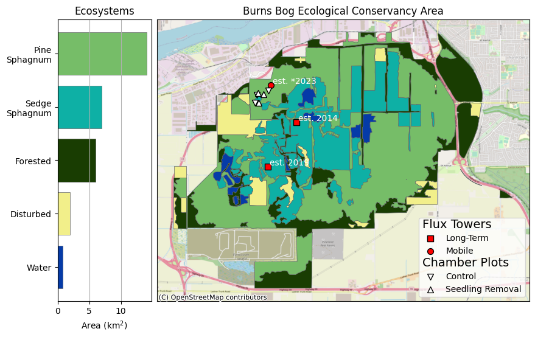
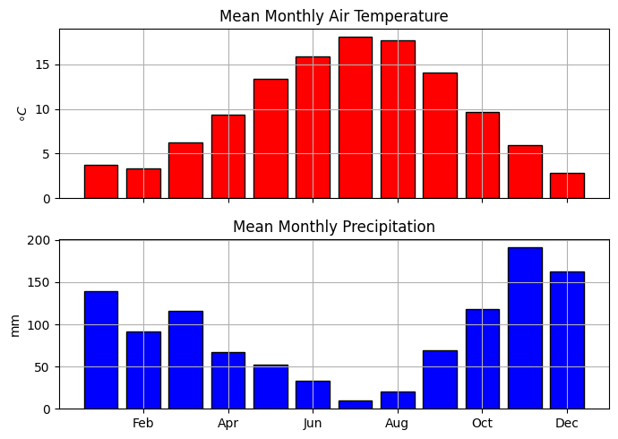

import geopandas as gpd
import matplotlib.pyplot as plt
import contextily as cx
import matplotlib.patches as mpatches
import matplotlib.gridspec as gridspec
from MapTools_py import map_elements as mel
BBECA = gpd.read_file('BB_Data/Spatial/ECOSYS_REV_TEM.shp')
BBECA = BBECA[['PRISTINE', 'ECO', 'MAP_UNIT', 'geometry']]
PS = 'Pine\nSphagnum'
BS = 'Pine\nSphagnum'
FR = 'Forested'
DS = 'Disturbed'
WA = 'Water'
Classes = {
'Water Lily - Watersh':WA,
'Herb. veg on dist. p':DS,
'Open Water':WA,
'Cultivated Field':DS,
'Disturbed Surface':DS,
'Hardhack Thicket':FR,
'Birch Forest':FR,
'Mixed Conifer Forest':FR,
'Pine-Salal Forest':FR,
'Pine Sphagnum Woodla':PS,
'Beakrush - Three-way':BS,
'Pine Sphagnum Tall S':PS,
'Beakrush - Sphagnum':BS,
'Pine Sphagnum Low Sh':PS,
}
Colors ={
PS:'#76bd68',#light green
BS:'#0eb0a5',#dark teal
FR:'#193d02',#dark green
DS:'#f2ef8a',#light yellow
WA:'#053ba8'#dark blue
}
BBECA['Class'] = BBECA['MAP_UNIT']
BBECA['Class'] = BBECA['Class'].replace(Classes)
BBECA.loc[BBECA['Class']=='Other','MAP_UNIT']='Other'
BBECA['AREA_sqKM']=BBECA.area.values/1e6
Boundary = BBECA[['geometry']].dissolve().explode(index_parts=True)
Boundary = Boundary.loc[Boundary.area>= 1e6].to_crs('WGS1984')
Boundary.to_file('BB_Data/Spatial/BBECA_Boundary.geojson',driver='GeoJSON')
Towers = gpd.read_file('BB_Data/Spatial/Towers.shp')
Towers.loc[Towers['Name']=='Sapling_NoTreatment','Name']='BBS'
Towers['X'] = Towers.geometry.x
Towers['Y'] = Towers.geometry.y
Burn = gpd.read_file('BB_Data/Spatial/SeedlingRemoval.shp')
Chambers = gpd.read_file('BB_Data/Spatial/Chamber_Sites_2016_Burn_Zone.shp')
for eco_type in BBECA['MAP_UNIT'].unique():
unit = BBECA.loc[BBECA['MAP_UNIT']==eco_type].dissolve().geometry[0]
Chambers.loc[Chambers.geometry.intersects(unit)==True,'Unit'] = eco_type.replace(
'Pine Sphagnum ','').replace('Low Sh','Low Shurb').replace('Tall S','Tall Shurb').replace('Woodla','Woodland')
Chambers=Chambers[['geometry','Unit']].copy()
Grid = gpd.read_file('BB_Data/Spatial/SeedlingRemoval.shp')
Grid.loc[Grid['year_done']!='2024','Treatment']='Seedling Removal'
Grid.loc[Grid['year_done']=='2024','Treatment']='Control'
Grid = Grid[['geometry','Treatment']].copy()
Grid = Grid.dissolve(by='Treatment')
for i,row in Grid.iterrows():
unit = row.geometry
Chambers.loc[Chambers.geometry.intersects(unit)==True,'Treatment'] = i
Chambers.loc[Chambers.geometry.intersects(unit)==True,'Zone'] = 2016
Chambers['Treatment']=Chambers['Treatment'].fillna('Control')
Chambers['Zone']=Chambers['Zone'].fillna(2005)
Chambers.loc[Chambers['Treatment']=='Seedling Removal','marker']='^'
Chambers.loc[Chambers['Treatment']=='Control','marker']='v'
Chambers['geometry'] = Chambers.buffer(50)
Chambers = Chambers.dissolve(by=['Unit','Treatment','Zone'])
Chambers['geometry']=Chambers.geometry.centroid
Eco = BBECA[['Class','AREA_sqKM','geometry']].dissolve(by='Class',aggfunc='sum')
Eco['Pct']=Eco['AREA_sqKM']/Eco['AREA_sqKM'].sum()
Eco = Eco.sort_values(by='Pct')
Eco.to_file('BB_Data/Ecosystem_Summary.shp')
for key,color in Colors.items():
Eco.loc[Eco.index==key,'Color']=color
Chambers = Chambers.reset_index()fig = plt.figure(figsize=(10,7))
gs = gridspec.GridSpec(100, 100)
bar=fig.add_subplot(gs[7:93, 0:20])
map=fig.add_subplot(gs[0:, 21:])
Class_Patches = []
bar_ylbl = []
bar_ytick = []
for index,row in Eco.iterrows():
kwargs = {
'facecolor':row['Color'],
'linewidth':.5,
'edgecolor':'#646669'
}
Eco.loc[Eco.index==index].plot(ax=map,**kwargs)
bar.barh(index,row['AREA_sqKM'],
**kwargs)
bar.grid(axis='x')
bar.set_xlabel('Area (km$^2$)')
bar.set_title('Ecosystems')
kwargs = {
'marker':'s',
'facecolor':'r',
'edgecolor':'k',
's':50
}
label_pad = 45
BB = Towers.loc[Towers['Name']!='BBS']
map.scatter(BB['X'],BB['Y'],
label='Long-Term',
**kwargs)
for i,row in BB.iterrows():
map.text(row['X']+label_pad,row['Y']+label_pad,f'est. {int(row.Start)}',color='white')
kwargs['marker'] = 'o'
BBS = Towers.loc[Towers['Name']=='BBS']
map.scatter(BBS['X'],BBS['Y'],
label='Mobile',
**kwargs)
for i,row in BBS.iterrows():
map.text(row['X']+label_pad,row['Y']+label_pad,f'est. *2023',color='white')
kwargs['facecolor'] ='white'
for treat in Chambers['Treatment'].unique():
row = Chambers.loc[((Chambers['Zone']==2016)&(Chambers['Treatment']==treat))]
kwargs['marker'] = row['marker'].iloc[0]
# kwargs['facecolor'] = row['color']
map.scatter(row.geometry.x,row.geometry.y,
label=treat,
**kwargs)
handles, labels = map.get_legend_handles_labels()
handles.insert(0,'Flux Towers')
labels.insert(0,'')
handles.insert(3,'Chamber Plots')
labels.insert(3,'')
map.legend(handles=(handles),labels=(labels),loc=4,
handler_map={str: mel.LegendTitle({'fontsize': 14})})
map.get_xaxis().set_visible(False)
map.get_yaxis().set_visible(False)
map.set_title('Burns Bog Ecological Conservancy Area')
cx.add_basemap(map,source=cx.providers.OpenStreetMap.Mapnik, crs=BBS.crs)#, zoom=11)
plt.savefig('images/EcosystemMap.png',dpi=600)Boundary = BBECA.dissolve()
Scale = 27500
fig,ax=plt.subplots(figsize=(5,5))
access_token='pk.eyJ1IjoidWJjbWljcm9tZXQiLCJhIjoiY2xmMnJzYzlnMGFsYTNxcW1kYWhubjBiaSJ9.rhIOVatxQoS4M__qIFv6Pg'
tileurl = 'https://api.mapbox.com/v4/mapbox.satellite/{z}/{x}/{y}@2x.png?access_token=' + str(access_token)
Boundary.plot(ax=ax,facecolor='None',edgecolor='yellow')
xl = ax.get_xlim()
yl = ax.get_ylim()
aspect = ((xl[0]-xl[1])/(yl[0]-yl[1]))
ax.set_ylim(yl[0]-Scale,yl[1]+Scale)
ax.set_xlim(xl[0]-Scale*aspect,xl[1]+Scale*aspect)
cx.add_basemap(ax,source=tileurl, crs=Boundary.crs, zoom=12)
ax.get_xaxis().set_visible(False)
ax.get_yaxis().set_visible(False)
plt.tight_layout()
plt.savefig('images/Basemap.png',dpi=600)
import rasterio as rio
import numpy as np
from rasterio.plot import show
from rasterio.warp import calculate_default_transform, reproject, Resampling
path = "/mnt/g/My Drive/earthengine/"
name = "S2_Summer_Composite.tif"
new_name = "S2_Summer_Composite_projected.tif"BBECA.crs
dst_crs = 'EPSG:26910'
Projected_Image = 'temp/FI_Projected.tif'
with rio.open(path+name) as src:
transform, width, height = calculate_default_transform(
src.crs, dst_crs, src.width, src.height, *src.bounds)
kwargs = src.meta.copy()
kwargs.update({
'crs': dst_crs,
'transform': transform,
'width': width,
'height': height
})
with rio.open(Projected_Image, 'w', **kwargs) as dst:
for i in range(1, src.count + 1):
# clip = pct_clip(rio.band(src, i))
reproject(
source=rio.band(src, i),
destination=rio.band(dst, i),
src_transform=src.transform,
src_crs=src.crs,
dst_transform=transform,
dst_crs=dst_crs,
resampling=Resampling.nearest)import pandas as pd
import matplotlib.pyplot as plt
ECC = pd.read_csv('BB_Data/DELTA BURNS BOG.csv',parse_dates=['LOCAL_DATE'],low_memory=False)
ECC = ECC.set_index('LOCAL_DATE')
ECC_m = ECC[['TEMP']].groupby(ECC.index.month).mean()
ECC_ym = ECC[['PRECIP_AMOUNT']].resample('m').sum()
ECC_m['PRECIP_AMOUNT'] = ECC_ym.groupby(ECC_ym.index.month).mean()
kwargs = {'color':'red','edgecolor':'k'}
fig,ax=plt.subplots(2,figsize=(7,5),sharex=True)
ax[0].bar(ECC_m.index,ECC_m['TEMP'],**kwargs)
ax[0].grid()
ax[0].set_ylabel('$\circ C$')
ax[0].set_title('Air Temperature',loc='left')
kwargs['color']='blue'
ax[1].bar(ECC_m.index,ECC_m['PRECIP_AMOUNT'],**kwargs)
ax[1].grid()
ax[1].set_xticklabels(['','Feb','Apr','Jun','Aug','Oct','Dec'])
ax[1].set_ylabel('mm')
ax[1].set_title('Precipitation',loc='left')
plt.tight_layout()
plt.savefig('images/Climatology.png',dpi=600)/tmp/ipykernel_4841/2634464067.py:21: UserWarning: FixedFormatter should only be used together with FixedLocator
ax[1].set_xticklabels(['','Feb','Apr','Jun','Aug','Oct','Dec'])